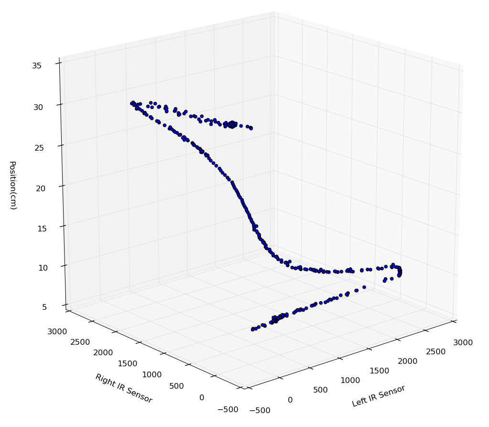
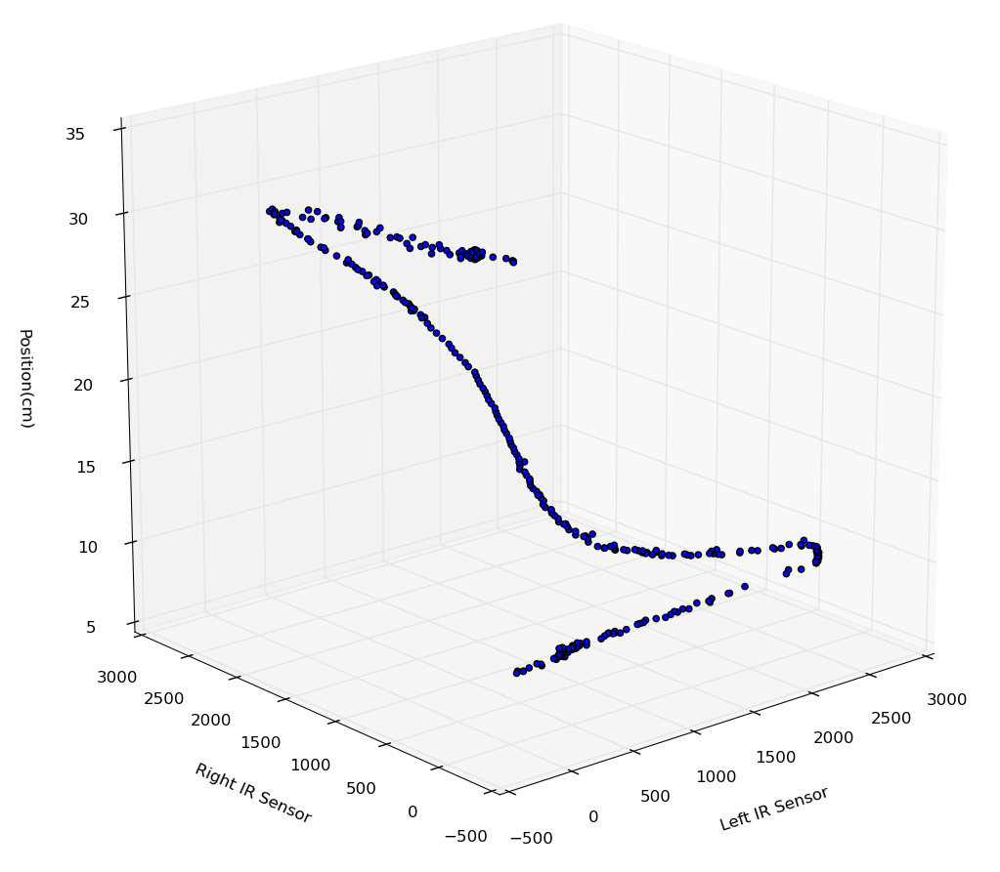
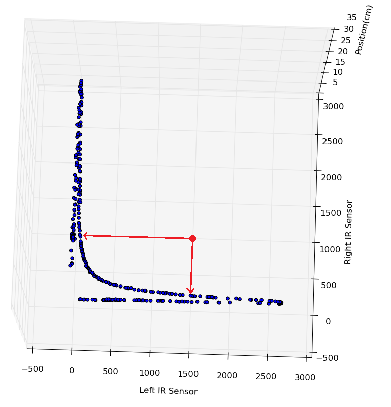

Localization
In robotics, there is a concept called localization, which refers to the robot finding out where it is in the world. This is necessary because due to randomness of the real world (friction, low battery, etc), the same command sent to a motor does not always have the same result. Thus, the robot must use additional sensor data to locate where it has ended up in the world.
Traditional Approach
In my AI robotics lab, we used a maze on a uniformly sized grid. For the robot to locate itself on a grid cell, the simple approach is for the robot to use one distance sensor (Infrared) on its side and map the sensor value to a real world distance using a 2D regression:
This works in theory, but in practice we realized that if the robot ended up turned at an angle, the robot thought it was farther than it actually was, and would soon crash into a wall as a result of this false information:
Here, the robot thinks it is 4cm to the right of where it actually is, and will tend to crash into the left wall instead of turning right to stay in the center
Additionally, if the robot was right up against a wall, there would be a steep dropoff because of the design of the sensor, which our exponential regression (or any equation-based regression) could not account for. This is a less important problem to solve because we hope we never end up that close to a wall, but a problem nonetheless and it explains the shape of our final regression curve.
If we use the traditional approach, the same sensor value could mean either of two entirely separate locations
Enter, Machine Learning
For our final project, we determined we could use machine learning to solve these two problems. If we could combine information from both the left and right IR sensors in a meaningful way, we could definitively locate ourselves within the world.
We started by creating a training set of points mapping left and right sensor values to real world position in the maze cell. The training points were perpendicular only (no angle offset).
In the below visualizations, X and Y are input (IR sensors) and Z is output (Position in cm). The resulting spline is essentially a mashup of two of the exponential curves we saw earlier, plus the dropoffs.
 

Two views of the same curve
Our robot then used a locally weighted regression with a carefully chosen weight function to predict the real world position given new input data. Simply put, training points closest to the new input in the XY plane would contribute most to the predicted value. It is somewhat like a K nearest neighbor, except the nearest neighbors are weighted by how near they are.
This solves the dropoff problem by spreading out the curve, so that every input combination has only one output on the curve, rather than two.
What may be less obvious, however, is how this solves the much larger problem of angle offset. Let's look at an example where the input is (1500, 1000):
If we had been doing a regression using only left or right, we would get one of two very different answers, both of which are way off target.
The example input does not lie on the training curve, because the robot is at an offset angle
Depending on whether left or right is used, two very different outcomes are possible
With the machine learning approach, locally weighted regression, the prediction is influenced by all nearby points, and the robot correctly determines its location: